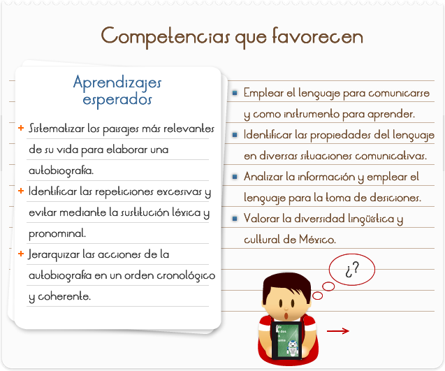

-


-
Nota: Desplazandote hacia arriba, podrás ver todo el contenido.Yo soy una alumna preparada y atiendo la escuela de James Lick Middle School clase de 2009. Hace 13 años, nací el 19 de septiembre de 1997 como a las 10:00pm. Mi mama me dio a luz en el Hospital General (junto de mi casa). Soy chicana por la parte de mis padres que nacieron en Santa Clara Jalisco, México en la Barranca. Mis padres se llaman Simón Preciado Rodríguez y Silvina Castro Preciado. Yo tengo tres hermanas y un hermano Se llaman: Esmeralda, Mariela, Bernabé y Adilia. Yo soy la más chiquita de mi familia. Mi familia es de siete personas (incluyendo a mi misma). Mi familia es como las familias en telenovela. Porque, aunque nos queremos mucho siempre tenemos problemas.
Cuando yo era chica yo tenía un mono de peluche llamado Munchichi. Todas las partes que yo fui lo llevé conmigo. Para mí, él era mi mejor amigo que tenía. Desde chiquita mi fruta favorita eran los plátanos. Siempre cuando mi prima me veía comiendo un plátano me decía que ya me parecía como un "Little monkey". Después de ese día ella me dijo que mi nuevo apodo era "Munchi" como mi mono de peluche. Porque siempre lo tenía conmigo y me gustaban los plátanos. A mí también me gustaban las Barbies pero no mucho como a mí me gustaba jugar con mi monito Munchichi. Después cuando tenía cuatro años me gustaba estar con mi hermana Adilia. Dice mi mama que nosotras nos parecemos inseparables. Desde ahorita todavía somos inseparables aunque peleamos mucho.
Cuando yo tenía cinco ó seis años me quebré mi brazo izquierdo. Me acuerdo que ese día mi mama estaba trapeando y yo quería un bolli porque estaba haciendo mucho calor. Después le dije a mi mama; "Me puede dar un bolli" y me respondió; "Tienes que esperar porque estoy trapeando y el piso esta mojado." Yo vi que había una silleta al entrar de la cocina y me senté. Cuando me senté no me fijé que una de las "patas" de la silla estaba mal puesta. Como cinco minutos después sentí que la silleta se estaba moviendo patras y para adelante. Después nadamas sentí cuando me caí al piso. Cuando me caí todo mi cuerpo se calló en mi brazo izquierdo. Después cuando mi mama me levanto del piso me pregunto, "Estas bien, te duele algo!"Yo nadamas me quede callada porque no sabía qué hacer. Como dos minutos después mi mama me llevo al hospital para chequiarme el brazo. Después me hicieron un examen de Xray. Cuando me llevaron al cuarto me ponieron un "cast" en mi brazo. Ahorita que ya tengo 13 años mi brazo todavía me duele en el frio cuando no tengo suéter.
Ahorita en estos días estoy en el octavo grado y todo es muy diferente a los grados seis y siete. Porque los grados seis y siete eran más fácil con los proyectos y las tareas y no teníamos mucha tares. Los proyectos del séptimo grado fueron como cuatro o cinco proyectos que teníamos. En el séptimo grado agarrábamos mucha tarea de matemáticas y ciencias. Pero ahora nos dan más tarea, libros y proyectos. Mi grado favorito fue el sexto. Porque mis clases eran muy interesantes y realmente no hicimos nada duro. Mi clase favorita fue la clase del Sr. Orihuela. Porque él era muy chistoso y también era muy serio. Pero, el podía aguantar un chiste, porque él era quien los decía.
Ahora que estoy en octavo grado es muy difícil porque nosotros/as tenemos que hacer muchas cosas nadamas para quedarnos con una A ó B. El algebra es muy difícil porque es algebra del noveno grado. Esa clase es unas veces muy "chida". Porque nadamas podemos trabajar pero, a la misma vez también podemos hablar. La persona de mi equipo quien yo puedo hablar con y me entiende y sabe de lo que estoy hablando de es mi amiga Blanca. Mi amiga Blanca y yo tenemos todas nuestras clases juntas excepto el gimnasio porque ella tiene a la Sra. Camp y yo al Sr. Ponce. Mis mejores amigas son Aly, Blanca y Verónica. Yo las conozco desde el sexto grado y ellas han estado ahí conmigo para ayudarme y apoyarme como mi familia. También, me junto con otras personas pero yo no los conozco como conozco a mis amigas. Mi amiga Aly ya no va esta escuela ella se mudo de casa a Antiock y ahorita va a una escuela en Antiock que se llama; Park Middle School. La amiga que yo conozco más es Blanca porque yo sé cosas de su vida que otros no saben y ella sabe cosas de mi vida que otros no saben.
Yo juego fútbol con mis amigas y amigos en la yarda de arriba. Mis deportes favoritos son el fútbol, el baloncesto y el beisbol. Mis equipos favoritos del fútbol son México y las chivas de Guadalajara. Mis equipos favoritos de baloncesto son los Chicago Bulls y los L.A. Lakers. Mis equipos favoritos del beisbol son los Oakland A´s y los San Francisco Giants. Los Giants, las chivas y el equipo de México son los más chidos y son los más favoritos de mi lista. Toda mi familia le va a esos equipos como yo. Gracias por leer mi Autobiografía y deseando que les gusto pero si no les gusto mi Autobiografía también está bien. Pero, yo trabaje muy duro en esto nadamas para terminarlo a tiempo y completarlo para que no agarrar un grado malo.
-
Nota: Desplazandote hacia arriba, podrás ver todo el contenido.Shakira Isabel Mebarak Ripoll nació el 2 de Febrero de 1977 en la localidad colombiana de Barranquilla, uno de los puertos más importantes del país y situado a orillas del mar Caribe.
Es hija de una familia de clase media. Sus padres son William Mebarak, de ascendencia libanesa, y Nidia Ripoll, colombiana. El caracter tradicionalista de sus padres influyó en la decisión de poner Shakira de nombre a su hija, que significa "Diosa de la Luz" en hindú y "Mujer llena de Gracia" en árabe.
Shakira dio sus primeros pasos en el mundo del espectáculo a los 5 años de edad, demostrando a través de cantos y danzas árabes una excepcional disposición artística.
Desde niña supo lo que quería: "la profunda necesidad de ser escuchada". Desde ese instante comenzó a prepararse para poder lograr la fama.
Según dice su madre: "La niña comenzó obsesionándose con la ciencia hasta que nos hizo suponer que terminaría siendo una investigadora, pero después se encerró en su alcoba noche y día a escribir cuentos y poemas. Nos engañó de nuevo cuando pensamos haber tenido una hija escritora, hasta que descubrí que eso de la escritura no era sino el primer paso y que lo que ella había estado escribiendo eran las letras de sus canciones".
Cuando sólo tenía 8 años compuso su primera canción, llamada "Tus gafas obscuras", que dedicó a su padre. A partir de entonces comenzó su verdadera carrera artística, cuando acompañada siempre por sus padres, apareció en varios programas de televisión y radio.
Al cumplir los 10 años comienza a escribir canciones, participando por vez primera en el concurso televisivo "Buscando Artista Infantil" en 1988, que transmite la cadena Telecaribe de Colombia. Shakira ganó dicho concurso durante 3 años seguidos.
Siendo todavía adolescente, Sony Music Colombia firmó su primer contrato discográfico que tuvo como resultado su primer álbum "Magia", donde Shakira incluyó temas compuestos entre los 8 y 13 años de edad. La música y la personalidad de la joven cantautora llamaron la atención del público y los medios colombianos, siendo seleccionada para participar en el Festival OTI que en aquélla edición se celebraba en España y al cuál no pudo asistir por no alcanzar la edad mínima necesaria, 16 años.
Tras grabar su segundo álbum, "Peligro", Shakira se graduó en el colegio y se entregó completamente a la música. Su siguiente álbum, "Pies Descalzos", la llevó a los primeros lugares de ventas y popularidad en Latinoamérica, España y Estados Unidos. Los temas que contenía, "Estoy Aquí", "Dónde Estás Corazón", "Pies Descalzos, Sueños Blancos", "Un Poco De Amor", etc., se convirtieron en éxitos multitudinarios con los que se identificaron cientos de miles de fans en todo el mundo de habla hispana. Las ventas millonarias de este álbum hicieron de Shakira la estrella latinoamericana más joven y prometedora de la década. Su siguiente álbum "Dónde Están los Ladrones?" convirtió la promesa en realidad y Shakira es, hoy por hoy, la máxima representante del pop-rock latino, a la vez que una de las compositoras más interesantes y admiradas en la actualidad.
"Dónde Están Los Ladrones?", -8xPlatino en USA, 5x en Argentina, 3x en Colombia y Chile, 4x en Centro América, 2x en México y 1x en España- fue nominado al Grammy como Mejor Album de Rock Latino y se mantuvo por más de un año entre los 10 primeros del Soundscand en Estados Unidos. El álbum, con los temas "Ciega, Sordomuda", "Tú", "Inevitable", "Ojos Así" y el tema que le da título, ha abierto para Shakira las puertas de los mercados internacionales y ya se encuentra trabajando en lo que será su primer álbum en inglés para ser lanzado en todo el mundo.
Mientras tanto, la cadena MTV rodó con la artista colombiana un programa de la serie Unplugged que ya ha sido emitido en la mayoría de los países latinoamericanos y en Estados Unidos y que será vuelto a programar en los próximos meses. El concierto se grabó el 12 de agosto de 1999 en el Grand Ballroom de los Manhattan Center Studios en Nueva York y el resultado final fue una hora de programa en el que Shakira hizo un repaso a los temas más importantes de su repertorio desde una vertiente acústica, acorde a la línea de MTV.
El álbum "Shakira MTV Unplugged" recoge los momentos más sobresalientes de su actuación aquélla noche de agosto en la que, en vivo y ante cerca de 500 personas, Shakira dio una lección de coherencia musical y personal, no solamente por la brillante adaptación de sus canciones a instrumentos y sonoridades acústicas, sino también por la transcendencia de su música, capaz de proyectar fuerza y sentimiento a cualquier nivel interpretativo.
Producido por la propia Shakira y Tim Mitchell, con Emilio Estefan Jr. como productor ejecutivo, el "unplugged" cuenta con la presencia de los músicos habituales de Shakira y la dirección y arreglos de Mitchell, Luis Fernando Ochoa y Shakira.
En 2001, la colombiana Shakira sacudió al mundo entero con su primer álbum en inglés titulado Laundry Service el cual vendió más de 13 millones de copias.
Ahora, la inquieta interprete musical, cantante, compositora, y productora está lista con una nueva colección musical creada en dos idiomas. Este nuevo trabajo será lanzado en dos partes; el primer álbum Fijación Oral estará en las tiendas el 7 de junio del 2005.Este es el primer álbum de Shakira en español en siete años. Le seguirá el álbum en inglés Oral Fixation 2 en Noviembre del 2005. Ambos álbumes serán lanzados por Epic Records.
El primer sencillo de Fijación Oral 1, titulado "La Tortura", incluye al astro español Alejandro Sánz y llegará a las estaciones de radio este mes.
"Terminé haciendo dos discos porque me salió así, no porque lo haya planeado ... sino que escribí 60 canciones, y elegí 20, y eso desembocó en dos álbumes", dijo Shakira.
Dado que Shakira vive una vida bilingüe, no sorprende que las canciones fueran escritas en dos idiomas. Ella explica, "Fueron saliendo mezcladas, unas en inglés, otras en español, la melodía sugiere en qué idioma se hace cada canción y a veces se me ocurren en inglés y a veces en español y así queda."
Shakira empezó a escribir Fijación Oral y Oral Fixation 2 inmediatamente después de su última gira mundial. Los álbumes fueron grabados en el estudio de su hogar, en las Bahamas, así como en Warehouse en Vancouver.
No sólo escribió o co-escribió cada canción en los dos álbumes, sino que también fue productora del proyecto al lado de algunos de sus colaboradores habituales, como Lester Mendez, Luis Ochoa y Tim Mitchell.
Además sumó a un nuevo colaborador, Gustavo Cerati (fundador de la banda pop argentina Soda Stereo). El legendario Rick Rubin (Beastie Boys, Red Hot Chili Peppers, Slayer) es el productor ejecutivo de los dos álbumes de Shakira.
Dado que la palabra juega un lugar fundamental en la vida de Shakira, no es sorprendente que haya escogido el título Fijación Oral/Oral Fixation, "Todo lo que pienso lo termino diciendo siempre."
El concepto va más allá de esto: "la etapa a la que los seres humanos estamos oralmente fijados es la primera etapa de nuestra vida, la más primaria, la más instintiva, la más animal. Creo que sigo en esa etapa, el más animal, sobre todo en este momento, que me siento más en contacto conmigo misma, con el ser animal que hay dentro de mí con la mujer más salvaje y más primaria, la universal. Con esa que cada vez estoy conociendo más":
Después de haber logrado el súper estrellato a través de Latinoamérica, los Estado Unidos y España (su ultimo álbum en español vendió mas de un millón de copias en Estados Unidos y más de cuatro millones en España y Latino America), en 2001 Shakira se convirtió en la mujer más exitosa en hacer el "crossover" con el lanzamiento de Laundry Service, su primer álbum en inglés.
Su talento artístico único fue exaltado rápidamente y el álbum produjo una cadena de éxitos incluyendo los hits "Whenever, Wherever" y "Underneath Your Clothes." Siendo un prodigio desde su niñez, Shakira escribió su primera canción a los 8 años, y consiguió su primer contrato discográfico con Sony Music Colombia a los 13 años.
Su primer lanzamiento fuera de Colombia, Pies Descalzos, la convirtió en una superestrella en Latinoamérica, Brasil y España. Su siguiente álbum, ¿Dónde Están Los Ladrones?, producido por Shakira, se convirtió en un éxito mundial de mayor envergadura.
Estuvo once semanas en el primer puesto de la lista de álbumes latinos de Billboard gracias a dos hits, "Ciega y Sordomuda," y "Tú." Shakira ha ganado tres premios Grammy Latinos y ganó un Grammy por mejor álbum Pop latino por su aclamado MTV Unplugged.
Shakira dedica el mayor tiempo posible a su fundación Pies Descalzos, cual promueve la educación y ayuda a los niños que han sido víctimas de la violencia en Colombia, y es embajadora de Unicef.